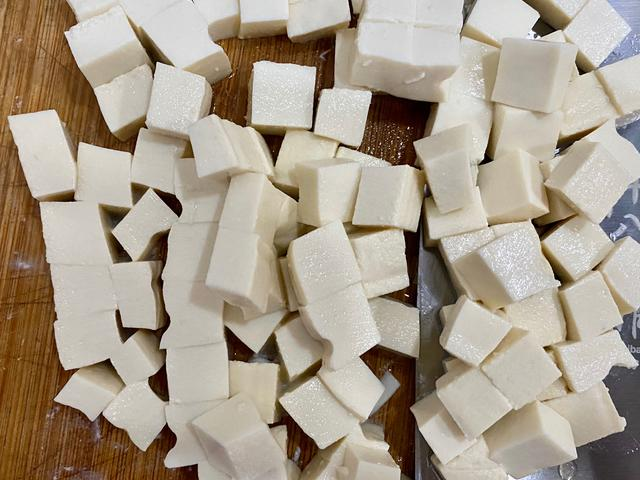
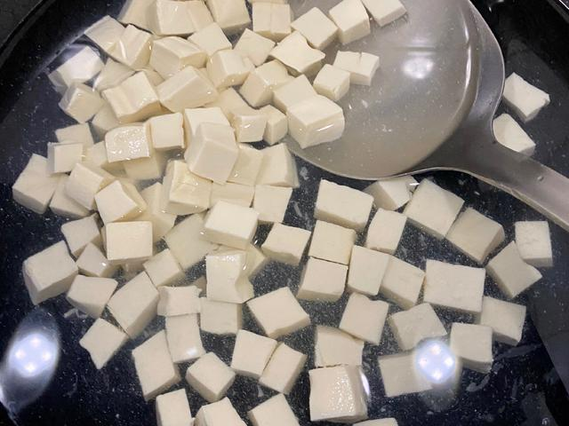
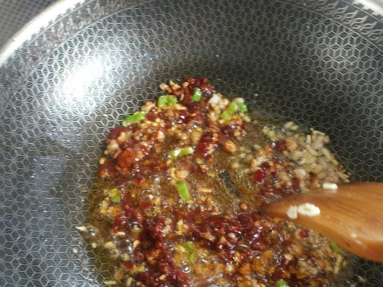
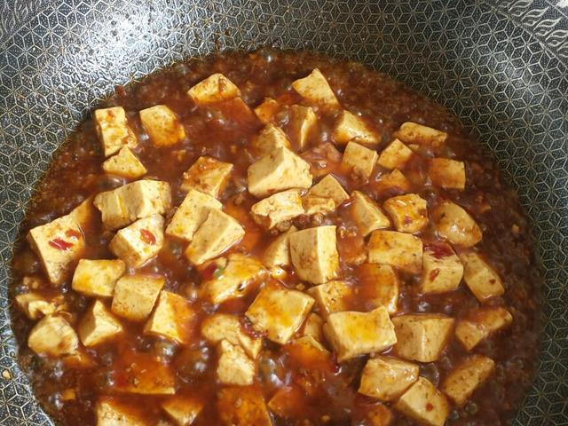
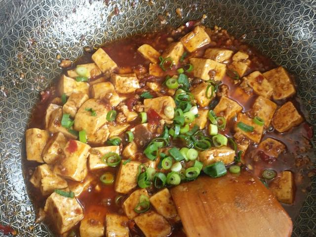
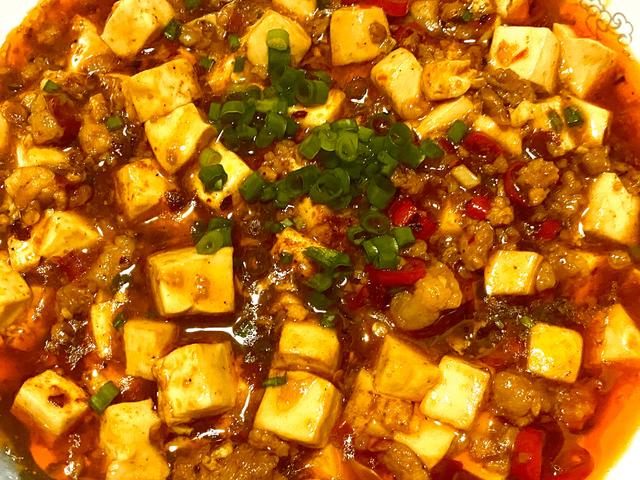

01 · 本课目标
这道菜考的是“耐心”
豆腐嫩、酱汁香、勾芡亮，看起来复杂，其实每一步都有明确检查点。
本课记住一句话：豆瓣酱下锅后先用小火炒到油变红，再加水；豆腐下锅后从头到尾只用“推”，不用“翻”。
02 · 用料
买这些就够了
豆腐选嫩豆腐或内酯豆腐，口感滑嫩；豆瓣酱要选“郫县豆瓣酱”，红油足。
姜 1 小块 切末，炒香用。
花椒粉 1/4 小勺 淀粉加水调成芡汁；花椒粉最后撒。
糖 1/2 小勺
葱 1 根 糖平衡咸辣，葱花最后点缀。
还需要：一口深一些的炒锅或汤锅、锅铲、两个小碗（一碗调芡汁、一碗备用热水）。
03 · 跟着做
六步，做一份挂汁的麻婆豆腐
豆腐提前焯水是“不碎”的第一道保险，别跳过。
第一段 · 准备（约 6 分钟）
-
STEP 切豆腐 · 约 2 分钟
豆腐切块，肉末切好
豆腐轻轻从盒里倒出，切成约 2 厘米见方的块；蒜姜切末，小葱切葱花，淀粉加三汤匙水调匀备用。
看到这样算对：豆腐块大小均匀，表面完整没有碎角；淀粉水没有结块。

-
STEP 焯水 · 约 2 分钟
盐水里焯豆腐 1 分钟
锅里烧开水，加半小勺盐，轻轻放入豆腐块，小火煮 1 分钟，捞出沥水。盐水能让豆腐紧实一点，也更不容易碎。
看到这样算对：豆腐捞出来还是完整的；用漏勺轻轻托着捞，别用锅铲硬铲。

-
STEP 炒料 · 约 2 分钟
肉末炒散，下豆瓣酱炒出红油
锅烧热倒一汤匙油，中火下肉末炒到变色；转小火，加入豆瓣酱和蒜姜末，慢慢翻炒约 1 分钟，直到油变成红亮的酱色。
看到这样算对：锅里的油明显泛红，能闻到酱香而不是生豆瓣味；如果冒烟，说明火太大。

第二段 · 下豆腐与勾芡（约 10 分钟）
-
STEP 炖豆腐 · 约 4 分钟
加热水，轻轻推入豆腐
沿锅边加入约 250 毫升热水，加生抽和糖，煮开。用锅铲背轻轻把豆腐推入汤里，让汤汁刚好没过豆腐。
看到这样算对：汤面轻轻咕嘟，豆腐在汤汁里没有碎开；全程不要用锅铲翻炒。

-
STEP 勾芡 · 约 3 分钟
淀粉水分两次淋入
中火保持微滚，先淋一半淀粉水，用锅铲背轻推两下；等 30 秒汤汁变稠，再淋剩下的一半，再推匀。
看到这样算对：汤汁从透明变亮、能挂在豆腐上；没有白色淀粉疙瘩。

-
STEP 出锅 · 1 分钟
撒花椒粉和葱花
关火，轻轻把豆腐连汁盛入深盘，撒上花椒粉和葱花。尝一口，麻、辣、咸、鲜，配饭刚好。
看到这样算对：豆腐完整、表面裹着亮芡；盘底有一层薄汁，不是一汪水。

04 · 翻车急救站
麻婆豆腐最常见：豆腐碎、酱不红、芡结块
好在都能补救，豆腐碎了也照样下饭。
豆腐全碎了
为什么：没焯水、用锅铲翻炒、或豆腐入锅时水太滚。
现在怎么办：别慌，碎豆腐吸满酱汁后就是“麻婆豆腐羹”，盖在饭上依然好吃。
下次避免：豆腐先盐水焯 1 分钟；下锅后只用锅铲背轻推。
有生豆瓣味，酱色发暗
为什么：豆瓣酱没有先炒，直接加水煮了。
现在怎么办：关小火，把酱再炒 1 分钟出红油再继续；已经煮了就多煮 2 分钟让味道融合。
下次避免：肉末炒好后，小火炒豆瓣酱至少 1 分钟再加热水。
勾芡结块或有粉感
为什么：淀粉没调匀，或一次倒太多。
现在怎么办：立刻关小火，把疙瘩尽量搅开；少量粉感加一点热水稀释。
下次避免：淀粉和水先充分搅匀，分两次少量淋入。
太咸
为什么：豆瓣酱本身很咸，又额外放了盐。
现在怎么办：加少量热水和一点糖稀释，多煮 1 分钟；下次配饭时多夹米饭。
下次避免：有豆瓣酱就别再放盐，出锅前尝过再决定。
05 · 学会标准
怎么算“学会了”？
这道菜过了，你对“酱汁菜”就有感觉了。
-
1
豆腐基本完整 能夹起一块，不散成一锅碎。
-
2
酱汁红亮挂芡 能挂在豆腐上，盘底只有薄薄一层。
-
3
没有生豆瓣味 入口是炒香后的咸鲜辣，不是生酱味。
-
4
能举一反三 知道同样的豆瓣酱炒法，可以去做回锅肉、烧茄子。